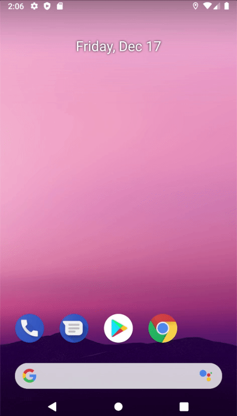

Espresso
Espresso를 사용하면 UI를 테스트할 수 있다. UI Test는 에뮬레이터나 실제 기기에서 수행해야하므로 androidTest디렉토리에 테스트 코드를 작성해야한다.
이제 본격적으로 Espresso에 대해 알아보자.
설정
Espresso를 사용하려면 다음 의존성을 추가해야한다.
모듈 수준의 build.gradle1
2
3
4
5
6
7
8
9
10
11
| android {
defaultConfig {
testInstrumentationRunner "androidx.test.runner.AndroidJUnitRunner"
}
}
dependencies {
androidTestImplementation 'androidx.test.espresso:espresso-core:3.1.0'
androidTestImplementation 'androidx.test:runner:1.1.0'
androidTestImplementation 'androidx.test:rules:1.1.0'
}
|
예제
간단한 Espresso 예제를 살펴보자. EditText에 문자열을 입력하고 Button을 클릭하면 TextView에 반영된다.
activity_main.xml1
2
3
4
5
6
7
8
9
10
11
12
13
14
15
16
17
18
19
20
21
22
23
24
25
26
27
28
| <?xml version="1.0" encoding="utf-8"?>
<LinearLayout xmlns:android="http://schemas.android.com/apk/res/android"
xmlns:tools="http://schemas.android.com/tools"
android:layout_width="match_parent"
android:layout_height="match_parent"
android:orientation="vertical"
android:gravity="center"
tools:context=".MainActivity">
<EditText
android:id="@+id/activity_main_editText"
android:layout_width="300dp"
android:layout_height="wrap_content"
android:inputType="text"
android:hint="Enter input" />
<Button
android:id="@+id/activity_main_button"
android:layout_width="wrap_content"
android:layout_height="wrap_content"
android:text="Button" />
<TextView
android:id="@+id/activity_main_textView"
android:layout_width="wrap_content"
android:layout_height="wrap_content"/>
</LinearLayout>
|
MainActivity.kt1
2
3
4
5
6
7
8
9
10
11
12
13
14
15
| class MainActivity : AppCompatActivity() {
private val editText: EditText by lazy { findViewById(R.id.activity_main_editText) }
private val button: Button by lazy { findViewById(R.id.activity_main_button) }
private val textView: TextView by lazy { findViewById(R.id.activity_main_textView) }
override fun onCreate(savedInstanceState: Bundle?) {
super.onCreate(savedInstanceState)
setContentView(R.layout.activity_main)
button.setOnClickListener {
textView.text = editText.text
}
}
}
|
이제 테스트 코드를 작성해보자
InputInstrumentedTest.kt1
2
3
4
5
6
7
8
9
10
11
12
13
14
15
16
17
18
19
20
21
22
23
24
25
26
27
28
| import androidx.test.espresso.Espresso.onView
import androidx.test.espresso.action.ViewActions.*
import androidx.test.espresso.assertion.ViewAssertions.matches
import androidx.test.espresso.matcher.ViewMatchers.*
import androidx.test.ext.junit.runners.AndroidJUnit4
import org.junit.Test
import org.junit.runner.RunWith
import androidx.test.rule.ActivityTestRule
import org.junit.Rule
@RunWith(AndroidJUnit4::class)
class InputInstrumentedTest {
@get:Rule
val activityRule = ActivityTestRule(MainActivity::class.java)
@Test
fun test_onClick() {
onView(withId(R.id.activity_main_editText)).perform(typeText("Hello World!"))
onView(withId(R.id.activity_main_button)).perform(click(), closeSoftKeyboard())
onView(withId(R.id.activity_main_textView)).check(matches(withText("Hello World!")))
}
}
|
위 테스트 코드를 실행하면
- EditText에 “Hello World!” 입력한다.
- 버튼을 클릭하고 키보드 닫는다.
- TextView의 text 속성이 “Hello World!”인지 확인한다.

(1) View 찾기
onView(withId(R.id.view))은 특정 뷰를 탐색하는데 사용한다. 다음과 같은 Button은
1
2
3
4
5
| <Button
android:id="@+id/activity_main_button"
android:layout_width="wrap_content"
android:layout_height="wrap_content"
android:text="Button" />
|
다음과 같이 뷰 계층 구조 내에서 뷰를 찾을 수 있다.
1
| onView(withId(R.id.activity_main_button))
|
(2) 액션 수행하기
perform()메소드로 특정 액션을 수행할 수 있다. 예를 들어 다음 코드는 Button을 클릭한다.
1
2
| onView(withId(R.id.activity_main_button))
.perform(click())
|
다음 코드는 Button을 클릭하고 키보드를 닫는다.
1
2
| onView(withId(R.id.activity_main_button))
.perform(click(), closeSoftKeyboard())
|
다음 코드는 EditText에 문자열을 입력한다.
1
2
| onView(withId(R.id.activity_main_editText))
.perform(typeText("Hello World!"))
|
Espresso가 지원하는 액션은 이 곳에서 확인할 수 있다.
(3) Assertion
check()메서드를 사용하여 현재 선택된 뷰를 검증할 수 있다.
다음 코드는 EditText의 text속성의 값이 “Hello”인지를 검증한다. 값이 “Hello”면 테스트에 통과하고 아니면 테스트에 실패한다.
1
2
| onView(withId(R.id.activity_main_textView))
.check(matches(withText("Hello")))
|
검증에 사용되는 모든 메소드는 이 곳에서 확인할 수 있다.